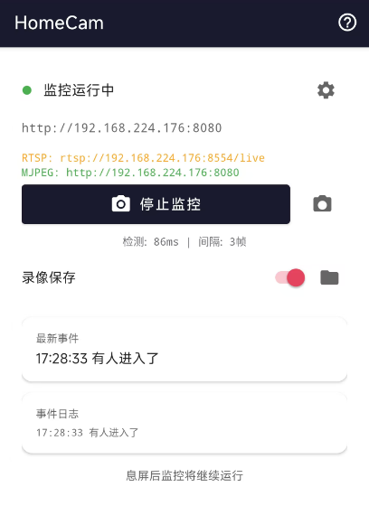
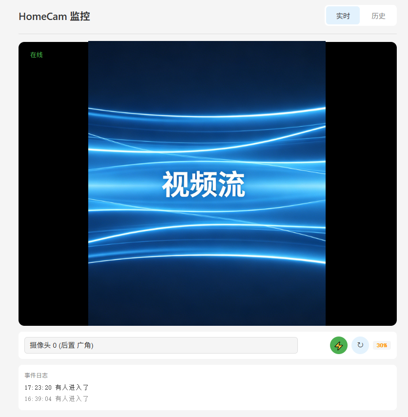
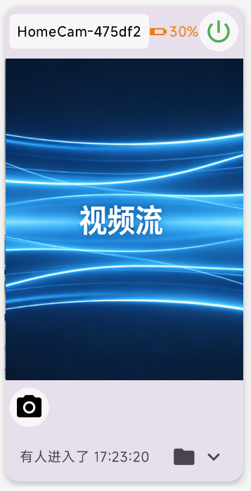
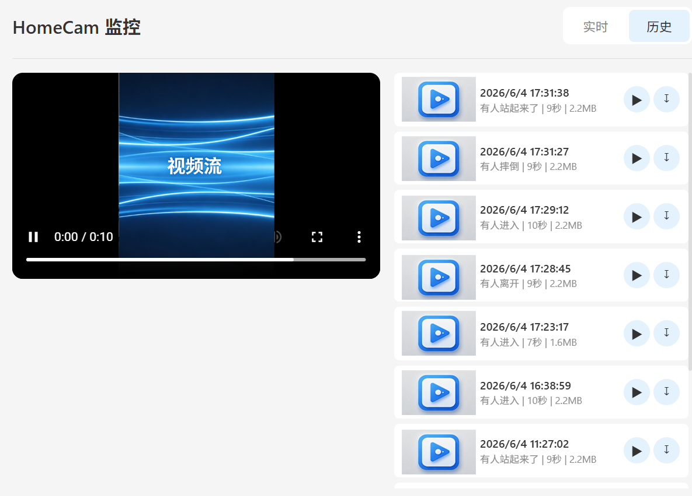

将 Android 手机变身为智能网络摄像头 · 完全免费 · 本地 AI · 开源
配套 HomeCam-TE 显示终端，支持多设备集中监控
HomeCam 是一款将 Android 手机变身为智能网络摄像头的应用。利用手机的摄像头进行实时监控，内置多种 AI 检测功能（人物移动、婴儿哭声、睡眠、跌倒等），支持 Web 浏览器和 RTSP 协议远程查看。
HomeCam-TE 是配套的 Android 显示终端，用于在局域网内同时监控多台 HomeCam 设备，支持语音+振动报警、摄像头控制、历史录像查看等功能。
浏览器访问 http://手机IP:8080
手机 IP 可在应用首页查看
rtsp://手机IP:8554/live
VLC / ffplay 等均可播放，可接入NVR或Homeassistant等
专用 Android 显示终端
支持多设备网格、语音/振动报警
ⓘ 打开关于/帮助/开源信息
浏览器打开后有两个选项卡：
| 元素 | 说明 |
|---|---|
| 实时画面 | 自动加载 MJPEG 视频流，断线自动重连 |
| 摄像头下拉 | 切换前置/后置/广角等可用摄像头 |
| 电源开关 ⚡ | 绿色 = 开启，红色闪烁 = 已关闭 |
| 旋转 ↻ | 每次点击画面顺时针旋转 90° |
| 电量显示 | 显示手机剩余电量，低电量变色提醒 |
| 事件日志 | 底部显示最近 AI 检测事件列表 |

| 步骤 | 操作 |
|---|---|
| 1 | 在 Android 设备上安装 HomeCam-TE APK |
| 2 | 确保 TE 设备和 HomeCam 设备在同一局域网 |
| 3 | 点击搜索图标自动发现，或点击右上角 + 手动添加摄像头（IP+端口） |
| 4 | 连接成功自动显示视频画面 |
卡片结构：

📁 进入历史录像查看，点击 ＞ 查看最近 20 条事件点击右上角 +，输入 IP 地址和端口（默认 8080），可选设备名称
点击搜索图标，广播 HOMECAM_DISCOVER，3 秒收集窗口，按设备 ID 去重
设备自动保存到 Room 数据库，重启应用自动恢复连接
事件同步：每 5 秒轮询 /api/events，增量更新（时间戳比较），内存保留最近 20 条。
语音报警：手机铃声通知。
振动报警：不同事件不同振动时长。
| 事件类型 | TTS 播报内容 | 振动时长 |
|---|---|---|
| 有人进入 | "有xxx进入了" | 200ms |
| 有人离开 | "有xxx离开了" | 200ms |
| 婴儿哭声 | "检测到婴儿哭声" | 1000ms |
| 宝宝睡着 | "宝宝睡着了" | 100ms |
| 宝宝睡醒 | "宝宝睡醒了" | 100ms |
| 检测到摔倒 | "检测到有人摔倒" | 1000ms |
| 有人站起 | "有人站起来了" | 100ms |
| 玩手机 | "有人在玩手机（XX%）" | 200ms |
设置页面支持总开关、按事件类型独立开关、语音/振动独立开关
电源开关（MJPEG 自动刷新）、镜头切换、流格式切换、设备编辑
点击卡片下方的 📁 图标进入历史录像页面：
/api/thumbnails）、事件类型彩色标签、时间、时长、文件大小| 设置项 | 说明 |
|---|---|
| 报警总开关 | 开启/关闭所有报警 |
| 按事件类型开关 | 分别控制 6 类事件的报警 |
| 振动开关 | 独立控制振动报警 |
| 语音开关 | 独立控制铃声通知 |
通过 MediaPipe Object Detection 检测目标（人/猫/狗/鸟）。
目标进入画面 → 有人进入了；目标离开超过 2 分钟 → 有人离开了。
可在设置中切换检测目标类别。
通过 YAMNet 音频分类模型实时分析麦克风声音。
检测到哭声 → 婴儿哭声。需要麦克风权限。
面部通道：分析眼部纵横比，闭眼 5 帧以上判定入睡，睁眼判定睡醒。
姿态辅助通道：面部不可见时（侧睡/背对），躯干水平持续 30 秒自动判定入睡。
睡眠状态下跌倒检测自动暂停。
通过 Pose Landmarker 分析躯干角度。
躯干水平超过阈值 → 检测到有人摔倒；站直 → 有人站起来了。
注意：手机横置安装时，需在设置中将「手机方向」改为横屏。
通过物体检测（识别手机）+ 手部关键点联合判定。
检测到手持手机 → 有人在玩手机（XX%）。冷却 30 秒。
在设置中可选择检测目标类别：
person 人 cat 猫 dog 狗 bird 鸟
| 设置项 | 说明 | 建议 |
|---|---|---|
| 推理后端 | CPU 或 GPU | GPU 更快但更耗电 |
| 检测间隔 | 每 N 帧检测一次（1-10） | 默认 3，值越大越省电 |
| 检测叠加层 | 视频流上显示检测框和标签 | 关闭可提升性能 |
| 策略 | 触发方式 | 适用场景 |
|---|---|---|
| 事件触发（默认） | 检测到特定事件时录制（哭声、睡眠、跌倒、手机使用、进入/离开） | 节省存储空间 |
| 有人/动物存在 | 检测到任何移动目标时持续录制 | 需要全程记录时使用 |
事件触发前后各录制 2-5 秒（默认 3 秒），确保捕获事件前后上下文
10-1000 可选（默认 50）。超出时自动删除最旧视频
📁 图标进入历史录像页面
端口 8080，任意浏览器访问 http://手机IP:8080
端口 8554，URL rtsp://手机IP:8554/live
端口 45678，监听 HOMECAM_DISCOVER 广播，配合 TE/HA 自动发现
| 设置项 | 选项 | 说明 |
|---|---|---|
| 分辨率缩放 | 1.0 / 0.75 / 0.5 | 降低可提升性能 |
| 帧率 | 15 / 30 FPS | 15 FPS 更省电 |
| 手机方向 | 竖屏 / 横屏 | 影响跌倒检测的躯干角度计算 |
| 设置项 | 默认值 | 说明 |
|---|---|---|
| Web 端口 | 8080 | HTTP 网页和 MJPEG 流端口 |
| RTSP 端口 | 8554 | RTSP 直播端口 |
| RTSP 服务器 | 关闭 | 开启后可用播放器连接 |
| MJPEG 服务器 | 开启 | 关闭后 Web 端无法看到视频 |
| 设置项 | 默认 | 说明 |
|---|---|---|
| 人物移动检测 | 开启 | 核心检测开关 |
| 检测目标 | person | person / cat / dog / bird |
| 婴儿哭声检测 | 关闭 | 需麦克风权限 |
| 睡眠检测 | 关闭 | 面部 + 姿态双通道 |
| 跌倒检测 | 关闭 | 需配合手机方向设置 |
| 手机使用检测 | 关闭 | 检测手持手机行为 |
| 推理后端 | CPU | CPU 稳定，GPU 更快但增加功耗 |
| 检测间隔 | 3 帧 | 值越大越省电 |
| 检测叠加层 | 开启 | 视频流上显示检测框 |
| 设置项 | 默认 | 说明 |
|---|---|---|
| 录像策略 | 事件触发 | 事件触发 / 有人存在 |
| 保存时长 | 3 秒 | 事件前后各 N 秒（2-5） |
| 最大视频数量 | 50 | 超出自动清理（10-1000） |
检查手机安装方向。手机横着放时，需在设置中将「手机方向」改为「横屏」。睡眠检测开启时，跌倒检测在睡眠状态下自动暂停。
HomeCam 端内部存储 Android/data/com.homecam.app/files/HomeCam/ 目录。
HomeCam · 开源免费 · GitHub
AI 检测辅助功能，不能完全替代专业安防设备。请勿用于非法用途。